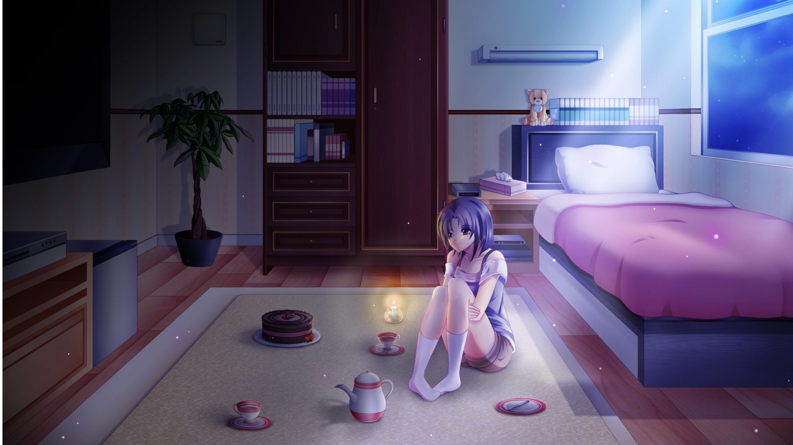

Стимопограммисты что-то намудрили, и при каждом обновлении мода слетает принятие правил использования. А без принятых правил использования моды неработоспособны, очевидно.
Поскольку портированием занимаюсь уже не я, а автором всё ещё числюсь я, и поменять это я не вижу возможности, возможен лаг между обновлением и принятием. Обычно - несколько минут, но иногда, когда портировщик выпускает срочный фикс, а я где-то валяюсь пьяный^W^W сильно занят, может пройти несколько часов.
Вопросы 7DL-куну
Сообщений 181 страница 210 из 269
Поделиться1812017-02-10 12:12:49
- Хикикомори

- Зарегистрирован: 2015-10-21
- Сообщений: 142
- Пол: Мужской
- Последний визит:
2018-04-15 22:31:52
Поделиться1822017-02-11 03:58:44
- Одиночка

- Зарегистрирован: 2016-01-28
- Сообщений: 51
- Пол: Мужской
- Возраст: 27 [1991-01-11]
- Последний визит:
2017-06-26 21:30:19
Dantiras, такую тягу к языкам, на мой взгляд, стоит реализовывать профессионально.
Dantiras написал(а):
С немецким у меня долгая история.
Музыкальный аспект оной имеется?
З.Ы. Оффтоп, конечно, завязываю.
Поделиться1832017-02-11 09:07:17
- Мизантроп

- Откуда: Москва / Ташкент
- Зарегистрирован: 2015-10-21
- Сообщений: 890
- Активен 27 минут
Amaurea написал(а):
Музыкальный аспект оной имеется?
Имеется как следствие, а не как причина. Со всякими die Toten Hosen, die Ärzte usw я познакомился уже в процессе изучения.
Более того, я вообще стал интересоваться музыкой одновременно с началом постижения дойча. До 18-ти лет было как-то индифферентно: моя история с музыкой в детстве и отрочестве заключалась в том, что на всех жилплощадях, где я появлялся на какое-то время, мной лично производился разбор на детали и винтики пианино или роялей (три фрага). Как-то сбор материала для гербариев, изучение систематики голосеменных, эволюции системы налогообложения Византии, проведение электромической полимеризации простейших гетеров или создание механического арбалета, стреляющего спицами для вязания, футбол и прятки во дворе, походы на тхеквондо/плавание и даже рыбалка в Таларыке на Куйлюке у бабушки (в Бозсу как-то не шибко порыбачишь, живя на Ц-4 - течение быстрое, канал с огромными берегами) прельщали меня в разы больше музыки и чтения худлита (кроме романов А.Беляева).
Amaurea написал(а):
такую тягу к языкам, на мой взгляд, стоит реализовывать профессионально.
Дополнительная квалификация "Переводчика в сфере профессиональной коммуникации" с английского языка имеется. В институтские годы, а иногда даже сейчас, подрабатывал переводом документации и научный статей (помимо основного химико-технологического профиля). С немецкого тоже иногда побрасывают статьи и патенты - в принципе, изучение не прошло даром.
Отредактировано Dantiras (2017-02-11 09:25:23)
Поделиться1842017-03-28 02:58:29
- Ньюфаг

- Зарегистрирован: 2017-01-10
- Сообщений: 0
- Последний визит:
2017-08-30 00:17:57
После Ульяны, как я понял, будет написана Славя 7дл? Если да, то получается альтернативный день откроется раньше некоторых рутов, и Д3 будет не финальным рутом??
Поделиться1852017-03-28 08:12:15
- Вахаха!~

- Откуда: Санкт-Петербург
- Зарегистрирован: 2015-10-21
- Сообщений: 344
- Пол: Мужской
- Последний визит:
Сегодня 16:44:15
Славя и Ульяна всего лишь завершат малый круг повествования.
Поделиться1862017-03-28 09:55:19
- Ньюфаг

- Зарегистрирован: 2017-03-10
- Сообщений: 27
- Последний визит:
Сегодня 09:11:25
7dl-kun написал(а):
Славя и Ульяна всего лишь завершат малый круг повествования.
То есть рут о трех демиургах будет доступен только после прохождения классиков?
Ну в принципе логично.
Отредактировано LemonDemon (2017-03-28 11:20:16)
Поделиться1872017-03-28 10:44:22
- Вахаха!~
- Откуда: Санкт-Петербург
- Зарегистрирован: 2015-10-21
- Сообщений: 344
- Пол: Мужской
- Последний визит:
Сегодня 16:44:15
Нет, доступен он будет после завершения мкп. Но это не значит, что я начну его писать незамедлительно после Славяны.
А у классиков своя роль в моде.
Поделиться1882017-03-28 12:39:52
- Ньюфаг

- Зарегистрирован: 2016-11-09
- Сообщений: 5
- Последний визит:
2017-10-26 00:30:25
7dl-kun написал(а):
Нет, доступен он будет после завершения мкп
Что понимается под "мкп"?
Поделиться1892017-03-28 12:45:27
- Одиночка

- Зарегистрирован: 2016-12-29
- Сообщений: 91
- Последний визит:
2018-03-23 14:30:57
BlackMazeGOD написал(а):
Что понимается под "мкп"?
7dl-kun написал(а):
малый круг повествования
Поделиться1902017-03-28 16:29:31
Наверное спрошу это уже черт знает каким, но не уж то нет и не будет хентая ?
Поделиться1912017-03-28 16:41:46
- Хикикомори

- Откуда: Азерот
- Зарегистрирован: 2016-11-11
- Сообщений: 109
- Пол: Мужской
- Активен 6 минут
MarikJ написал(а):
Наверное спрошу это уже черт знает каким, но не уж то нет и не будет хентая ?
Тут такие тексты, что воображение вполне справляется само:)
Уверен, если и есть в планах, то такие картиночки стремятся к последнему месту.
Поделиться1922017-03-28 17:06:14
- Хикикомори

- Откуда: Москва
- Зарегистрирован: 2016-08-26
- Сообщений: 195
- Пол: Мужской
- Последний визит:
2018-04-16 21:57:03
MarikJ написал(а):
Наверное спрошу это уже черт знает каким, но не уж то нет и не будет хентая ?
Тащ, Вот я вас совсем не понимаю.
Ну хочется вам на голых пионерок поглазеть, так открывайте tor группу Художник-куна и ему подобных и рукоблудствуйте. А вот для полного погружения в "процесс" условия заданы самые правильные - потушенный свет, правильно подобранная музыка и сочные, яркте тексты. Все это оставляет тебя один на один с разыгравшимся воображением.
Поэтому с гордостью, почти девизом выдолблено мною на сине-белой стене "Хентая нет и никогда не будет"
Поделиться1932017-03-28 18:33:04
- Ньюфаг
- Зарегистрирован: 2017-03-10
- Сообщений: 27
- Последний визит:
Сегодня 09:11:25
Кстати, почему у мода до сих пор нет команды предварительной вычитки?
Попросить хотя бы того же тов. Мелириуса, не трогая спорные моменты, скидывать вычитаный файл не на форум, а сразу автору в файлик - и пришлось бы тратить в стократ меньше времени на лазанье в код и исправление ошибок. То же самое и с механикой, судя по пролистанным мною тредам, имеются такие люди, которые уже знатное количество времени проверяют авторское детище на огрехи.
---
Включи автор в свою команду вычитки хотя бы 1-го человека - и мод бы перестал казаться таким кустарным из-из-за постоянно встречающихся ошибок во время выхода нового текста.
Фанаты вздохнули бы с облегчением, ведь эпоха вечных вылетов и шариний по форумам и группам в поисках фиксов враз бы сошла на нет - большинство багов присекалось бы еще на корню.
---
Одиночество не приводит ни к чему хорошему - то ведь один из главных посылов сего творения.
Отредактировано LemonDemon (2017-03-28 18:35:13)
Поделиться1942017-03-29 12:38:21
- Хикикомори

- Откуда: Ташкент
- Зарегистрирован: 2016-09-04
- Сообщений: 151
- Пол: Мужской
- Возраст: 80 [1937-05-17]
- Последний визит:
Сегодня 13:55:02
LemonDemon написал(а):
Кстати, почему у мода до сих пор нет команды предварительной вычитки?
Просился вычитывать ещё до регистрации на форуме.
Поделиться1952017-03-29 13:28:56
- Хикикомори
- Откуда: Москва
- Зарегистрирован: 2016-08-26
- Сообщений: 195
- Пол: Мужской
- Последний визит:
2018-04-16 21:57:03
shers написал(а):
Просился вычитывать ещё до регистрации на форуме.
Да многие были бы не против.
Но автор непреклонен, поэтому на выходе получаем то, что получаем.
Отредактировано Gr0m (2017-03-29 16:53:39)
Поделиться1962017-03-29 16:20:43
- Вахаха!~
- Откуда: Санкт-Петербург
- Зарегистрирован: 2015-10-21
- Сообщений: 344
- Пол: Мужской
- Последний визит:
Сегодня 16:44:15
Вы меня ещё поучите мод писать. Без багов и ошибок.
Поделиться1972017-04-09 15:28:19
- Хикикомори

- Зарегистрирован: 2016-08-19
- Сообщений: 192
- Активен 39 минут
Тов. Автор, просьба к вам есть.
Мы с тов. Громом сейчас занимаемся группой ВК, посвященной 7дл, где стараемся структурировать имеющийся контент. Сейчас хотим разложить по полочкам CG из мода, чтобы не скидывать всё в одну кучу. Решили рассортировать по трём альбомам:
- основной альбом (оригинальный контент);
- неоригинальный контент (потыренные с интернета арты без редактирования; возможно (на ваше усмотрение), не следует сюда помещать арты, отлично подходящие под задумку, например, сцена с Алисой и качелями);
- перерисовки (подредактированные арты с интернета вообще и БЛ/7дл; возможно, не следует сюда помещать арты, подвергшиеся значительной перерисовке, например, сцена с Леной и просмотром фильма).
Мы в меру своих знаний и сил арты рассортировали, но есть большие сомнения в правильности, вы же как автор можете наиболее объективно их распределить. Просьба к вам указать нам на ошибки (в любом удобном формате) или представить свой вариант сортировки. Ссылку на альбомы с ВК прилагаю https://vk.com/albums-128046483
Будем благодарны, если найдёте для этого время.
Поделиться1982017-04-09 16:17:22
- Вахаха!~
- Откуда: Санкт-Петербург
- Зарегистрирован: 2015-10-21
- Сообщений: 344
- Пол: Мужской
- Последний визит:
Сегодня 16:44:15
Привет.
Из перерисовок
11 оригинал
13 оригинал
27 оригинал из бл
49 оригинал
56 оригинал
57 неоригинал
64 бг оригинал
Неоригинал
2 оригинал раскраска как и Славя с метлой
4 оригинал (по факту перерисовка, но туда столько труда вбухано)
7 оригинал
8 перерисовка
12 оригинал
18 перерисовка
22 оригинал
23 бг оригинал
Оригинал
13 перерисовка
14 перерисовка
15 перерисовка
17 перерисовка
18 перерисовка
21 пер
23 пер
26 пер
34 пер
36 пер
37 пер
Поделиться1992017-04-09 16:26:29
- Хикикомори
- Зарегистрирован: 2016-08-19
- Сообщений: 192
- Активен 39 минут
Спасибо!
Поделиться2002017-04-09 20:29:38
- Хикикомори
- Откуда: Москва
- Зарегистрирован: 2016-08-26
- Сообщений: 195
- Пол: Мужской
- Последний визит:
2018-04-16 21:57:03
7dl-kun написал(а):
7 оригинал 8 перерисовка
А оно точно так? 7 же тов. Шерз в "необходимый контент" скидывал.
На 8 различий с гугловскими результатами тоже не нахожу.
Прикладываю изначальное расположение фотографий на всякий случай.
P.S. Фиолетовые волосы Мику в том же 8 оставлены специально? Судя по ф.б. версии, они должны бы быть иссиня-черными.
Спойлер
Думаю, так даже мрачнее выходит

Отредактировано Gr0m (2017-04-09 20:38:50)
Поделиться2012017-04-10 08:25:58
- Вахаха!~
- Откуда: Санкт-Петербург
- Зарегистрирован: 2015-10-21
- Сообщений: 344
- Пол: Мужской
- Последний визит:
Сегодня 16:44:15
Здесь вообще порядок другой.
Поделиться2022017-04-10 09:02:10
- Хикикомори
- Зарегистрирован: 2016-08-19
- Сообщений: 192
- Активен 39 минут
7dl-kun написал(а):
Здесь вообще порядок другой.
А, может, у вас был обратный порядок?
Свернутый текст
Поделиться2032017-04-10 09:57:00
- Вахаха!~
- Откуда: Санкт-Петербург
- Зарегистрирован: 2015-10-21
- Сообщений: 344
- Пол: Мужской
- Последний визит:
Сегодня 16:44:15
Не хочу забивать голову чепухой. Сейчас выгружу цг-шки единым архивом с категоризацией, как оно у меня, а вы там сами смотрите, как вам будет удобнее.
Вот ссылка: https://yadi.sk/d/Xs4F4OKd3Gormu
Поделиться2042017-04-10 10:05:08
- Хикикомори
- Зарегистрирован: 2016-08-19
- Сообщений: 192
- Активен 39 минут
7dl-kun написал(а):
Не хочу забивать голову чепухой. Сейчас выгружу цг-шки единым архивом с категоризацией, как оно у меня, а вы там сами смотрите, как вам будет удобнее.
Вот ссылка: https://yadi.sk/d/Xs4F4OKd3Gormu
Так даже лучше, спасибо большое.
Поделиться2052017-04-25 23:06:23
- Ньюфаг

- Зарегистрирован: 2017-02-25
- Сообщений: 7
- Последний визит:
2017-10-28 15:20:13
Доброго времени суток. Кто-нибудь будет так добр подсказать почту 7дл-Куна?
Поделиться2062017-04-25 23:14:04
- Вахаха!~
- Откуда: Санкт-Петербург
- Зарегистрирован: 2015-10-21
- Сообщений: 344
- Пол: Мужской
- Последний визит:
Сегодня 16:44:15
влад блэйс написал(а):
Доброго времени суток. Кто-нибудь будет так добр подсказать почту 7дл-Куна?
bl7dl@ya.ru
Поделиться2072017-06-14 22:43:49
- Одиночка

- Зарегистрирован: 2017-06-14
- Сообщений: 61
- Пол: Мужской
- Последний визит:
Сегодня 16:56:59
Будет ли сценарная ветка или даже ветки, вроде Мику из оригинального Бесконечного Лета? Что-то подобное есть в Славя-Классик конечно, но всё же.
Поделиться2082017-06-15 14:52:25
- Хикикомори
- Откуда: Азерот
- Зарегистрирован: 2016-11-11
- Сообщений: 109
- Пол: Мужской
- Активен 6 минут
El Jorge написал(а):
Будет ли сценарная ветка или даже ветки, вроде Мику из оригинального Бесконечного Лета? Что-то подобное есть в Славя-Классик конечно, но всё же.
Думаю, разве что в других Классик-рутах, которые несколько отличаюся от всего остального, можно будет увидеть подобное. И я немного не понял, в чём сходство с рутом Маши, в том, что происходит действие в "параллельном" мире, а шахты "не то, чем кажутся"?
Поделиться2092017-06-15 22:19:50
- Одиночка
- Зарегистрирован: 2017-06-14
- Сообщений: 61
- Пол: Мужской
- Последний визит:
Сегодня 16:56:59
Regolas написал(а):
И я немного не понял, в чём сходство с рутом Маши, в том, что происходит действие в "параллельном" мире, а шахты "не то, чем кажутся"?
По сути да. Мистика и заметное отклонение от основной сюжетной ветки. Но согласен, что это не совсем то. Хотелось бы именно что-то похожее на сюжетку Мику, чтоб шокировало и удивляло =) Может даже чтоб переход на такую сюжетную ветку, был незаметен на первый взгляд при первом выходе с основной линии, и может даже был случайным: допустим при очередном прохождении, когда выбираешь те же самые варианты ответов, что в одном из предыдущих, рискуя выйти на уже пройденный сюжет.
Отредактировано El Jorge (2017-06-15 22:22:36)
Поделиться2102017-06-15 22:49:18
- Мизантроп
- Откуда: Москва / Ташкент
- Зарегистрирован: 2015-10-21
- Сообщений: 890
- Активен 27 минут
El Jorge написал(а):
...заметное отклонение от основной сюжетной ветки.
Эт смотря, что считать основной сюжетной веткой, товарищ. =)
El Jorge написал(а):
чтоб шокировало и удивляло
Развлеките себя чтоль новеллой "Когда плачут цикады", как матерью этого Мику-рута.
El Jorge написал(а):
при очередном прохождении, когда выбираешь те же самые варианты ответов, что в одном из предыдущих, рискуя выйти на уже пройденный сюжет
Рандомайзер рутов? Читатели Вам такое не простят. =)